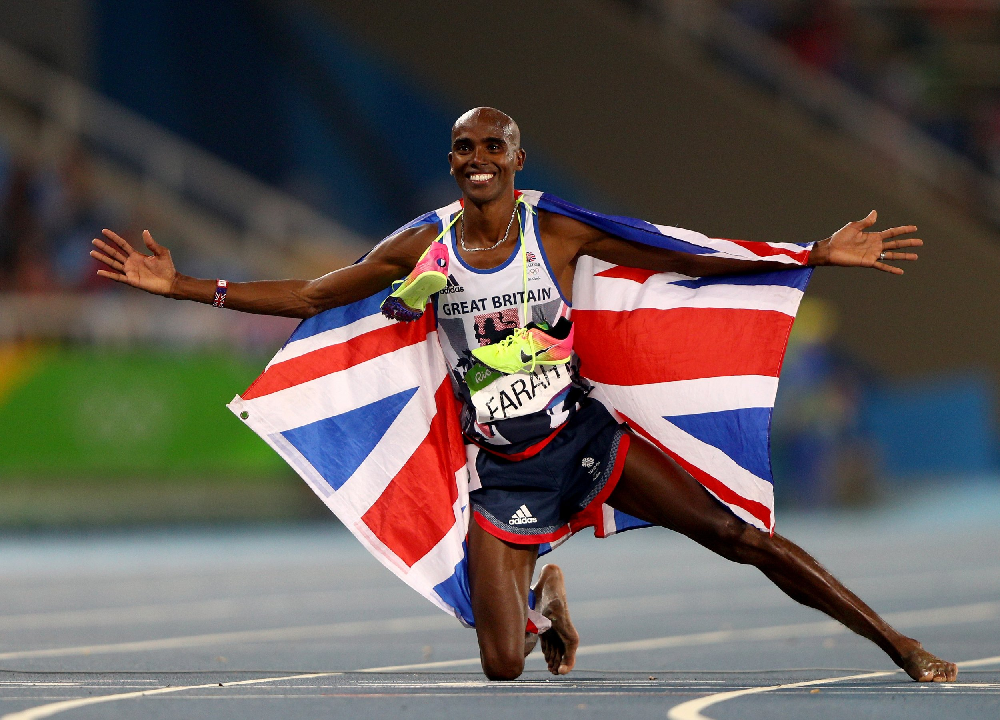

Usain Bolt, known as the fastest man alive, has won numerous gold medals and set multiple world records in sprinting events. He holds the world records for the 100 meters, 200 meters, and 4 × 100 meters relay. Bolt's charismatic personality and extraordinary speed have made him a global icon in athletics.
Allyson Felix
Allyson Felix is one of the most decorated athletes in track and field history. She has won multiple Olympic and World Championship medals, specializing in the 200 meters, 400 meters, and 4 × 400 meters relay. Felix is known for her speed, endurance, and advocacy for athletes' rights.
Mo Farah

Mo Farah is a British long-distance runner who has achieved remarkable success in the 5,000 meters and 10,000 meters events. He has won gold medals at the Olympics and World Championships, becoming one of the most successful distance runners in history. Farah's signature "Mobot" celebration is recognized worldwide.
Shelly-Ann Fraser-Pryce
Shelly-Ann Fraser-Pryce is a Jamaican sprinter who has won multiple Olympic gold medals in the 100 meters and 200 meters events. Known for her explosive speed and consistency, she is considered one of the greatest female sprinters of all time. Fraser-Pryce's success has made her a role model for aspiring athletes around the world.
Neeraj Chopra
Neeraj Chopra is an Indian javelin thrower who has achieved historic success in his sport. He won the gold medal at the Tokyo 2020 Olympics, becoming the first Indian athlete to win an Olympic gold in track and field. Chopra's achievements have inspired a new generation of athletes in India.
Jessica Ennis-Hill
Jessica Ennis-Hill is a retired British track and field athlete who specialized in the heptathlon. She won the gold medal at the 2012 London Olympics and is a multiple-time World Champion. Ennis-Hill is celebrated for her versatility, determination, and impact on women's athletics.